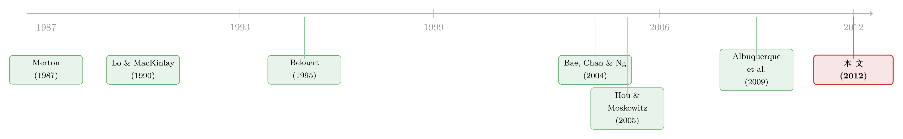

外资来了，全球新闻就传得更快吗？——一道写在「可投资度」里的自然实验
本文读的是 Bae, Ozoguz, Tan & Wirjanto (2012, Journal of Financial Economics)：作者用一只股票对外资的「开放程度」（可投资度）作为外资参与的代理变量，发现开放度越高的股票，对全球市场信息反应越快——价格延迟更小，而且高可投资度股票的收益会领先不可投资股票。一句话：金融自由化不只是降低资本成本，它还让新兴市场的价格变得更「聪明」。
1 一个被问了三十年的老问题
自上世纪八十年代末、九十年代初新兴市场陆续向外资敞开大门起，国际金融学界就一直在吵一件事：外国资本，到底是不是好东西？
一派人盯着一次次金融危机说，热钱来去如风，是危机的放大器；另一派人则攒出了一大堆实证证据，说开放市场是有好处的——它能降低资本成本 (Henry, 2000b; Bekaert & Harvey, 2000)、刺激实体投资 (Henry, 2000a; Mitton, 2006)、甚至拉动生产率与增长 (Bekaert, Harvey & Lundblad, 2005, 2009)。
这些好处，几乎都落在「实体经济」或「融资成本」这一层。本文作者却把镜头转向了一个少有人正面回答的角度：自由化会不会让价格本身变得更有效率？ 换句话说，外资进来之后，新兴市场的股价是不是更快、更充分地把该反映的信息反映进去了？
这个切口的妙处在于，它把「外资好不好」这个宏大命题，缩小成了一个可以量化、可以做对照实验的微观问题：同一个市场里，对外资开放程度不同的股票，价格调整的速度有没有系统性差异？
（顺带一提，关于外资到底是「蝗虫」还是「长期主义者」，本博客另有一篇可与本文对照阅读：《外资真是「蝗虫」吗？》。）
2 识别策略：把「可投资度」当成一把尺子
作者的核心假设很直白，他们称之为可投资度效应假说 (investibility-effect hypothesis)：全球市场信息在「可投资」股票里扩散得更快，在「不可投资」股票里更慢。
为什么会这样？背后的逻辑来自 Albuquerque, Bauer & Schneider (2009) 的一类模型：股票收益同时由本地因子和全球因子驱动，而全球投资者天然掌握着关于全球因子的私有信息——这恰恰是本地投资者所欠缺的。于是本地投资者会对全球消息反应不足 (underreact)。Merton (1987)、Basak & Cuoco (1998)、Hou & Moskowitz (2005) 等一系列「有限参与」模型也给出了同方向的结论：制度壁垒、信息成本、交易成本，都会拖慢信息被价格吸收的过程。
注意这里的不对称：外资在本地信息上可能是劣势方（他们离得远、消息不灵），但在全球信息的处理上很可能是优势方（更好的资源与专业能力）。所以本文押的不是「外资全知全能」，而是一个更精细的命题——外资是更好的「全球新闻翻译官」。
那么怎么找到「外资参与程度」这把尺子？这是全篇识别的关键。作者用的是新兴市场数据库 (EMDB) 报告的 degree open factor，即每只股票的可投资权重 (investible weight)——一个介于 0 到 1 之间的数，衡量「一家公司的市值中，外国实体在法律上可以合法持有的比例」。据此把股票分成三组：
- 不可投资 (noninvestible)：外资一股都不能买（投资权重为 0）；
- 部分可投资 (partially investible)：外资最多持有 50%；
- 高度可投资 (highly investible)：外资可以持有 50% 以上。
这把尺子的好处是它来自法律/制度的外生限制，而不是外资「想不想买」的内生选择。
作者用两种互补的方式来检验假说。第一，看价格延迟：如果外资股权限制确实在阻碍全球信息进入价格，那么价格延迟应当与可投资度负相关。第二，看领先—滞后 (lead-lag) 格局：如果可投资股票更快吸收全球信息、再缓慢扩散给不可投资股票，那么前者的收益应当领先后者，反之不成立。
这里有个绕不开的内生性担忧：可投资度可能与其他公司特征（规模、流动性、分析师覆盖）相关，而这些特征本身也会影响信息扩散速度。EMDB 在选股时确实偏向大盘、高流动性的股票——这正是作者最担心的混淆。后文的实验设计（控制变量 + A/B 股的「同卵双胞胎」实验）就是为了把可投资度的效应从这些因素里剥出来。
3 价格延迟怎么量
要检验「反应快慢」，先得把「快慢」做成一个数。作者沿用 Hou & Moskowitz (2005) 的价格延迟 (price delay) 思路。
第一步，对每只股票 \(i\)、每一年，做这样一个回归——把个股周收益对当期与滞后的全球（本地）市场收益一起回归：
其中 \(R^{W}_{t}\) 是全球（世界）市场收益，\(R^{L}_{t}\) 是本地市场收益，\(K\) 是滞后周数。直觉很简单：如果价格当周就对全球消息做出了反应，那么滞后项 \(R^{W}_{t-k}\) 几乎解释不了 \(R_{i,t}\) 的任何变动；反之，如果价格反应迟钝，滞后项的系数就会显著不为零。
第二步，把这个直觉压缩成一个延迟指标。作者的主测度是：
$$ D_{i} \;=\; 1 \;-\; \frac{R^{2}_{r}}{R^{2}} $$
这里 \(R^{2}\) 来自上面完整回归，\(R^{2}_{r}\) 来自一个受限回归——把所有滞后全球（本地）市场收益的系数强行设为零。如果滞后项本来就没用，受限与不受限的拟合优度几乎一样，\(D_i \approx 0\)，价格没有延迟；如果滞后项贡献很大，\(R^{2}_{r}\) 会明显小于 \(R^{2}\)，\(D_i\) 就大，价格延迟严重。作者还构造了直接用滞后系数加权的第二个延迟测度作为稳健性，思路一致：滞后系数占总反应的比重越高，延迟越大。
把延迟分别按全球市场信息和本地市场信息各算一遍，是本文设计里最讲究的一笔——因为它能区分外资到底是在哪一类信息上发挥作用。
4 数据
- 主数据：标普新兴市场数据库 (S&P EMDB)，取周度美元收益、市值、成交量。用周度而非日度，是为了规避非同步交易 (nonsynchronous trading) 带来的偏差；用美元收益、本币收益结果类似。
- 样本：
4,840只股票，21个新兴市场，1989—2008。EMDB 原本覆盖 38 个市场、6,175只股票（占各市场逾 75% 市值），作者只保留「外资存在感够强」的国家——要求每国年均美国对其本地股票的持有额至少$3 billion，或美国持有额/本地市值之比至少10%。 - 辅助数据：与 I/B/E/S International 合并取分析师人数；美国财政部数据取美国对各国持股；另从 Ferreira-Matos 处取国家层面的外资机构持股。
- 清洗：删去收盘价为零或缺失的观测，并剔除
90个周收益超过200%的观测（经与 Datastream 核对确认是真错误）。
几个能看出门道的描述统计：可投资度的跨国差异极大——希腊 (0.66)、南非 (0.65) 最开放，而中国 (0.19)、印度 (0.20)、菲律宾 (0.20) 最封闭。美国投资者持有额上韩国最大（$61.5 billion），其次是巴西和墨西哥（各近 $50 billion）。值得一提的是，美国持有额/本地市值之比与外资机构总持股的相关系数超过 90%——这说明用美资近似「外资」并不离谱。
作者也坦诚了可投资度的局限：它度量的是「外资法律上能买多少」，未必等于「外资实际买了多少」。一只高可投资度的股票，可能因为外资不感兴趣而压根没什么外资持有，限制并不绑定。作者在国家层面做了验证——平均可投资权重确实能正向预测实际外资持股，这才让这把尺子站得住脚。
5 主要结果
证据三连，全部指向同一个方向。
第一，价格延迟与可投资度负相关——而且只对全球信息成立。 可投资度越高的股票，对全球市场信息的价格延迟越小。关键的对照在于：作者发现可投资度与全球延迟的负向关系，明显强于它与本地延迟的关系；对本地信息的延迟，可投资度几乎没有解释力。这个「只在全球信息上起作用」的不对称，正是本文最有说服力的地方——它排除了「可投资股票只是单纯调整得更快」这种笼统解释，把矛头精确地指向了外资在处理全球信息上的专长。
第二，高可投资度股票的收益领先不可投资股票，反之不然。 而且这种领先—滞后关系独立于规模和成交量——并不是「大股票领先小股票」的老故事 (Lo & MacKinlay, 1990) 的翻版。更进一步，作者把高可投资度股票收益中与全球市场信息相关的那一部分单独拎出来，发现它能预测不可投资股票的收益。有意思的反转是：部分可投资股票并不领先高可投资股票，哪怕前者规模更大、交易更活跃——这再次说明，起作用的是「对外资开放的程度」，而不是「大不大、活不活跃」。
（信息在「相连」的股票之间逐步扩散这一思路，本博客另有一篇可参看：《被「同一批股东」拖慢的消息》。）
6 最干净的那一刀：A 股与 B 股
到这里，细心的读者一定会皱眉：可投资度和公司基本面纠缠在一起，怎么能确定是「外资」而不是「基本面」在驱动结果？
这正是全文设计最漂亮的一步。 作者找到了一个近乎「同卵双胞胎」的对照组——同一家公司同时发行的两类普通股：A 股只能由本地投资者交易，B 股由外国投资者交易。两类股票背后的基本面完全相同，所以它们对全球信息调整速度的任何差异，只能归因于「谁在交易」——也就是可投资度的差异。这等于把内生性担忧按在地上摩擦了一遍。
结果与主假说严丝合缝：B 股把全球信息计入价格的速度快于 A 股；而在对本地信息的调整速度上，A、B 股没有差异。进一步看收益动态，B 股组合的收益能预测 A 股组合的收益，反之不成立。
这与 Chan, Menkveld & Yang (2007) 的发现并不矛盾，反而互补。他们用高频数据发现中国市场上 A 股在价格发现上领先 B 股——但那捕捉的是短命的私有本地信息（本地人有优势）。本文盯的则是全球信息的低频扩散（外资有优势）。两类信息、两个方向，各得其所。
（同一家公司两类股票的价差，本身就是一座富矿；用 A/H 比价给货币政策的贴现率通道称重，可参见《同一只股票，两个价格》。）
7 文献脉络
把这篇论文放回它生长的土壤里，会看得更清楚。
最上游，是 Lo & MacKinlay (1990) 那篇开创性的工作——他们发现大盘股收益能预测小盘股、反之不然，自此「收益的横截面自相关」成了一条长盛不衰的研究线，人们陆续把它归因于分析师覆盖 (Brennan, Jegadeesh & Swaminathan, 1993)、机构持股 (Badrinath, Kale & Noe, 1995)、成交量 (Chordia & Swaminathan, 2000)。这些研究共同指向一个判断：市场摩擦造成了股票间调整速度的差异。

与此并行的，是「有限参与」的理论谱系：Merton (1987) 的投资者认知假说、Basak & Cuoco (1998)、Shapiro (2002)，直到 Hou & Moskowitz (2005) 把它落地成可度量的「价格延迟」——这给了本文最直接的工具。另一边，Bekaert (1995) 第一个用可投资度作为外资股权限制的代理，开了一条用「可投资度」研究自由化的路；Bae, Chan & Ng (2004) 用它发现了可投资度与收益波动率的正向关系，Chari & Henry (2004)、Mitton (2006) 则各自挖掘了风险分担与公司业绩的效应。再加上 Albuquerque, Bauer & Schneider (2009) 提供的全球私有信息模型——
本文恰好站在这三条线的交汇处：它把有限参与的价格延迟工具、可投资度这把自由化的尺子、和全球信息扩散的理论焊在了一起，给出了一个此前没人正面回答的命题——外资让新兴市场的价格对全球信息反应得更快。
评论与延伸（Q&A + 研究方向）
(a) 几个可能的疑问
Q：可投资度只是「能买」，不是「真买」，那这把尺子还可信吗？
这是本文最先要回答的质疑。作者在国家层面验证了平均可投资权重能正向预测实际外资持股，说明限制大体是绑定的。但更硬的回答其实是 A/B 股实验——那里「谁在交易」被法律一刀切死，完全不依赖「能买≈真买」这个近似。
Q：会不会只是「大股票领先小股票」的旧故事换了层皮？
不是。作者明确报告领先—滞后关系独立于规模和成交量；而且部分可投资股票虽然更大、更活跃，却并不领先高可投资股票。驱动结果的是「对外资开放的程度」，不是体量或流动性。
Q：为什么强调「只对全球信息成立、对本地信息不成立」这件事？
因为这个不对称是识别外资角色的关键。如果可投资股票对所有信息都反应更快，那可能只是「好股票调整快」的笼统现象；唯有「专门在全球信息上更快」，才能把功劳归到「外资是更好的全球新闻处理者」这一机制上。
Q：和「外资到底更知情还是更不知情」的老争论是什么关系？
文献在这个问题上结论混杂：有人说本地人更强 (Hau, 2001; Choe, Kho & Stulz, 2005; Dvorak, 2005; Bae, Stulz & Tan, 2008)，也有人说外资更强 (Grinblatt & Keloharju, 2000; Seasholes, 2000)。本文给了一个调和的视角：外资在本地信息上是劣势、在全球信息上是优势——相对重要性谁高谁低，取决于价格里反映的信息构成，这也解释了为什么过往证据会打架。
Q：样本会不会被某一个大国（比如中国）带偏？
作者做了稳健性：剔除中国后主要结论质上不变；也确认结果不是由单一大国驱动。考虑到样本里中国有 265 只股票、是数量最多的国家，这个检验是必要的。
Q：标准误怎么处理的？
参考文献里列了 Petersen (2009)、Thompson (2011)、White (1980) 等聚类/稳健标准误方法，以及 Murphy & Topel (1985) 的两步估计推断——说明作者对延迟测度本身是「估计出来的回归量」这一点（两步问题）有所应对。
(b) 几个可能的研究问题与提案
1）把「全球信息翻译官」搬到公司债市场。 - 【经济故事】股票上外资加速全球信息扩散，那在新兴市场美元债/本币债上呢？外资持有人比例高的债券，是否对全球信用利差、美债收益率冲击反应更快？债券的全球因子（美债、全球信用）比股票更干净，机制可能更锐利。 - 【可行性】中。需要新兴市场债券的外资持有数据（如 EPFR 基金流、各国托管登记），识别上可借鉴本文的「价格延迟」框架，把市场因子换成全球信用/利率因子。难点在于债券交易稀疏，需要处理非同步交易。
2）用资金流的「断点」做更强的因果。 - 【经济故事】本文是横截面相关 + A/B 股准实验。能不能找到可投资度的离散跳变（某只股票被纳入 MSCI 可投资指数、或外资持股上限被一次性放开），做事件研究或断点回归，直接看价格延迟在事件前后的变化？ - 【可行性】高。指数纳入/上限调整有明确日期，是干净的外生冲击；数据（指数成分变更、监管公告）可得。这能把「相关」升级为「因果」。
3）外资究竟是「翻译」全球信息，还是只是提供了流动性？ - 【经济故事】更快的价格调整，可能源于外资带来的信息，也可能只是外资带来的流动性/交易量。能否把两者拆开——比如比较「高外资持股但低换手」与「低外资持股但高换手」的股票？ - 【可行性】中。需要同时观测外资实际持股与换手率的细分数据；识别靠交互项。本文已部分控制成交量，但更精细的拆分仍有空间。
4）危机时刻，「翻译官」会不会变成「传染源」？ - 【经济故事】平时外资加速好信息的扩散；但 Boyer, Kumagai & Yuan (2006) 发现可投资指数在危机期与危机国共动更强。那么同一个「外资加速信息」的机制，在尾部是否反而放大了坏消息的跨国传染？ - 【可行性】中。可按市场状态（平静/危机）分样本，比较高/低可投资度股票对全球负向冲击的反应不对称。数据沿用本文框架即可，识别难点在于定义危机窗口。
我的判断
这篇论文的贡献在于问题的精准与设计的克制。它没有去回答「外资好不好」这个无解的大问题，而是把它收窄到「价格效率」这一可测量的维度，再用「可投资度 × 价格延迟」的组合给出干净的回答；而 A/B 股那一刀，几乎把内生性担忧逼到了墙角——这是全文最值得学的一招。
要说对识别的担忧，我有三点。其一，可投资度终究是「能买」而非「真买」，作者的验证停留在国家层面（个股层面观测不到外资持股），这层近似在主回归里始终是个软肋——A/B 股实验虽硬，却只覆盖了一小撮同时发行两类股的公司，外部有效性存疑。其二，价格延迟是两步估计量（先回归得 \(D_i\)，再拿 \(D_i\) 去回归），生成回归量的推断问题需要格外小心，文中提到了相关方法但读者难以从结果完全判断其充分性。其三，全球市场因子的选取（用什么代理「全球信息」）本身会影响延迟测度，作者做了多代理稳健性，但「全球」与「本地」因子的正交化在新兴市场并不干净。
后续我最想看到的，是把这套逻辑搬到新兴市场公司债上，并用 MSCI 纳入这类离散冲击做断点/事件识别——既能验证机制的可推广性，又能把本文的相关证据升级为更硬的因果。
参考文献
- Albuquerque, R., Bauer, G. H., & Schneider, M. (2009). Global private information in international equity markets. Journal of Financial Economics 94(1), 18–46.
- Bae, K.-H., Chan, K., & Ng, A. (2004). Investibility and return volatility. Journal of Financial Economics 71(2), 239–263.
- Bae, K.-H., Ozoguz, A., Tan, H., & Wirjanto, T. S. (2012). Do foreigners facilitate information transmission in emerging markets? Journal of Financial Economics 105(1), 209–227.
- Bae, K.-H., Stulz, R. M., & Tan, H. (2008). Do local analysts know more? A cross-country study of the performance of local analysts and foreign analysts. Journal of Financial Economics 88(3), 581–606.
- Bekaert, G. (1995). Market integration and investment barriers in emerging equity markets. World Bank Economic Review 9(1), 75–107.
- Bekaert, G., Harvey, C. R., & Lundblad, C. (2005). Does financial liberalization spur growth? Journal of Financial Economics 77(1), 3–56.
- Boyer, B. H., Kumagai, T., & Yuan, K. (2006). How do crises spread? Evidence from accessible and inaccessible stock indices. Journal of Finance 61(2), 957–1003.
- Chan, K., Menkveld, A. J., & Yang, Z. (2007). The informativeness of domestic and foreign investors' stock trades: Evidence from the perfectly segmented Chinese market. Journal of Financial Markets 10(4), 391–415.
- Hou, K., & Moskowitz, T. J. (2005). Market frictions, price delay, and the cross section of expected returns. Review of Financial Studies 18(3), 981–1020.
- Lo, A. W., & MacKinlay, A. C. (1990). When are contrarian profits due to stock market overreaction? Review of Financial Studies 3(2), 175–205.
- Merton, R. C. (1987). A simple model of capital market equilibrium with incomplete information. Journal of Finance 42(3), 483–510.
- Mitton, T. (2006). Stock market liberalization and operating performance at the firm level. Journal of Financial Economics 81(3), 625–647.